You’ve scrolled through nine wars — for your technology, your money, your history, your mind, your energy, your information, your body, your sky, and your faith. This one is different. Mind Wars showed what they suppressed — remote viewing defunded, psychedelic research criminalized, consciousness science ridiculed. The Pipeline shows what they put in its place. The CIA distributed LSD through MKUltra. The military ran remote viewing for 23 years, then the retired officers sold courses. A UN-recognized NGO was originally called Lucifer Publishing Company. The New Age movement has a supply chain — and it starts in Langley.
Every empire needs a church. Not for God — for compliance. For two thousand years, organized religion performed the same function as a border wall: it kept the inner world mapped, surveilled, and taxed. You wanted to talk to the divine? You went through a priest. You wanted forgiveness? You paid for it. You wanted revelation? You read the one book they hadn’t burned.
Then the 20th century cracked the wall. Two world wars. The Holocaust. Vietnam on television. Exposed pedophilia. The pews emptied. People didn’t stop seeking. They stopped believing the building.
That should have been liberation. It was an opening.
When a hundred million people walk out the front door of one cage, someone is already building the next one on the sidewalk. They just make sure it doesn’t look like a cage. They make sure it looks like freedom.
The question was never whether people would keep seeking. The question was who would be standing at the exit.
This is their product catalog.
The pews emptied. The seekers scattered. And someone was waiting at the exit with a product catalog. This scroll traces the supply chain.
The CIA didn’t just study LSD. They distributed it.
Project MKUltra ran from 1953 to 1973. 149+ sub-projects across 80+ institutions — universities, hospitals, prisons, pharmaceutical companies. Budget: at least $25 million. Director: Sidney Gottlieb, Chief of the CIA’s Technical Services Division. In 1973, DCI Richard Helms ordered all files destroyed. Twenty thousand pages survived by accident — misfiled in a financial records office and discovered via FOIA request in 1977.
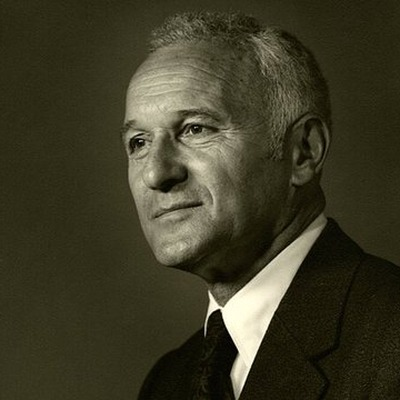
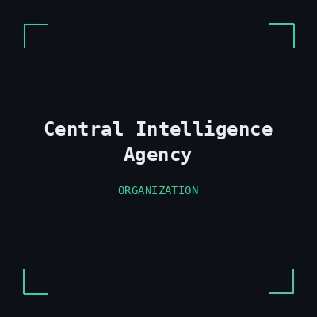
The substance that defined the counterculture entered through a CIA supply chain. This is not inference. It is documented in the surviving financial records.
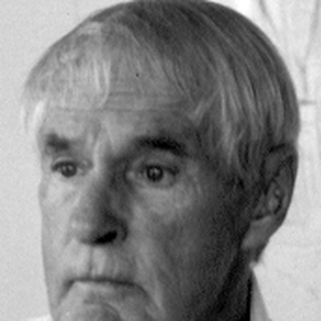
R. Gordon Wasson — Vice President of J.P. Morgan — published the first mainstream Western account of psilocybin mushrooms in Life magazine on May 13, 1957. His research was funded under MKUltra Sub-project 58. A CIA chemist named James Moore accompanied Wasson on the 1956 expedition to Oaxaca, Mexico, to obtain mushroom samples for the Agency.
Swiss pharma → CIA mind control division → university researchers → MKUltra test subject → counterculture movement → cultural icon → mass distribution. Every link documented.
While the CIA was distributing LSD through academic channels, a remarkable cluster of musicians emerged from a single neighborhood in Los Angeles — Laurel Canyon. Their family backgrounds tell a story that the music histories leave out.
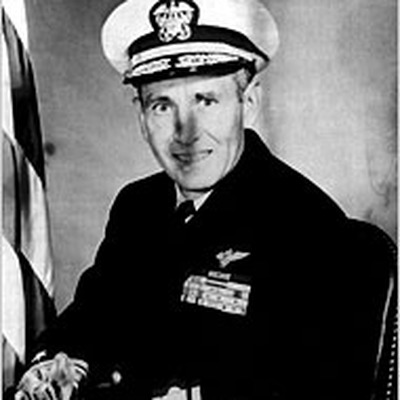
You don’t suppress a sacrament. You mass-produce it without the ceremony, flood the zone, and let the culture do the discrediting for you. The acid opened a door. Millions walked through. On the other side, someone had already built the gift shop.
The Human Potential Movement didn’t start in a commune. It started at Stanford Research Institute — the same facility running classified remote viewing for the CIA.
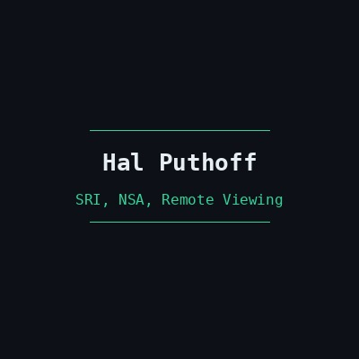
When Stargate was declassified and shut down in 1995, the trained military remote viewers did something predictable. They started selling courses.
Ed Dames, Paul Smith, Lyn Buchanan, David Morehouse, Joe McMoneagle — they all began offering “Technical Remote Viewing” training. Art Bell’s Coast to Coast AM was the primary vector. Classified military methodology became a consumer product. The protocol was identical. The institutional container was gone.
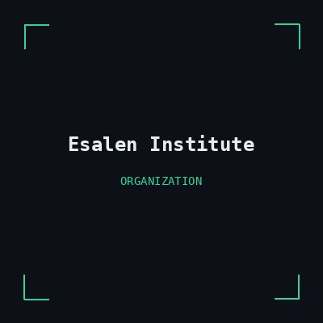
Intelligence funding → classified research lab → consciousness retreat center → social movement → corporate adoption → consumer product. Every genuine technology of consciousness either got classified or commercialized. The classified version went to intelligence. The commercial version went to you — with the active ingredient removed.
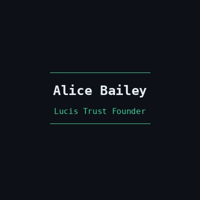
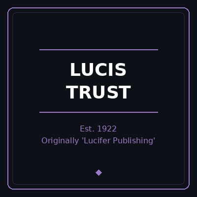
To be clear: ECOSOC consultative status is held by over 6,000 NGOs. Lucis Trust does not “run” the United Nations. But a former Assistant Secretary-General printing Alice Bailey’s name on his education framework — and that framework winning a UNESCO prize — is not nothing. It’s a documented organizational chain from 19th-century occultism to 20th-century global governance.
Theosophical Society → political activist successor → breakaway occultist → original corporate name → renamed trust → United Nations consultative status. Each link documented in organizational records.
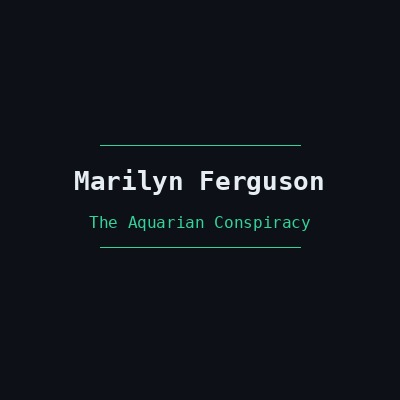
Every genuine technology of consciousness was either classified or commercialized. The classified version went to intelligence. The commercial version went to you — with the active ingredient removed.
Paul Bennewitz wasn’t crazy. They made him crazy. And his story is the template for every genuine seeker who gets too close.
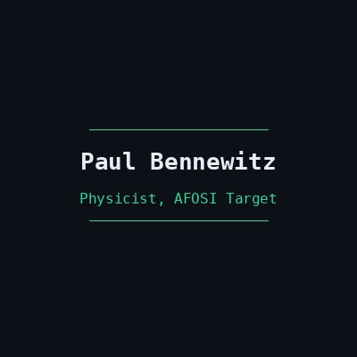
William Moore — co-author of The Roswell Incident (1980) and a prominent UFO researcher — publicly confessed at the 1989 MUFON Symposium that he had cooperated with AFOSI in feeding disinformation to Bennewitz in exchange for access to supposedly real UFO information. The confession is on tape. A leading researcher in the field was a knowing participant in the destruction of a fellow investigator.
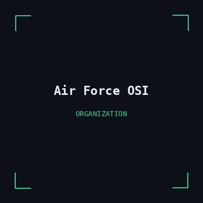
It was easier to make him look crazy than to confirm what he was actually detecting. If he talked about underground alien bases, nobody would take him seriously — and the classified programs would stay hidden. The disinformation wasn’t the failure. It was the plan.
Genuine anomaly → honest investigator → intelligence infiltration → disinformation campaign → investigator discredited → media coverage mocks topic → public learns not to ask. Bennewitz proves the template exists. The question is how many times it’s been used.
Mack died in a traffic accident in London in 2004. His research program did not survive him at Harvard.
You thought this scroll was about fake spirituality replacing real religion. It’s not. It’s about a containment architecture — a system designed to catch the people who see through both cages and neutralize them before they connect with each other. Bennewitz was destroyed because he detected something real. Mack was investigated because he listened to people. The pipeline doesn’t just sell you crystals. It identifies the credible ones and takes them out.
The most profitable customer is the one who almost finds what they’re looking for.
The pipeline’s final product isn’t belief or disbelief. It’s an endless loop: institutional religion fails → seeker enters the marketplace → buys crystals, apps, retreats → experiences something real (meditation works, psychedelics open perception) → tries to go deeper → encounters ridicule, disinfo, or financial gatekeeping → retreats to safer consumption → burns out → returns to cynicism → tells others “it’s all nonsense.”
The loop is self-sustaining. It doesn’t need new operations. The architecture maintains itself through social pressure, market incentives, and exhaustion.
Notice what gets funded and what doesn’t. Mindfulness apps get venture capital. Collective consciousness research gets nothing. Yoga studios get commercial real estate. Psi research labs close. Individual seeking is encouraged. Collective investigation is defunded.
Programs don’t disappear. They get rebranded as wellness. Suppression doesn’t end. It gets a subscription model. And the pipeline doesn’t close — it just adds another loop.
Read the pipeline backwards.
The pipeline is a map. Every wall tells you what’s on the other side. Every defunded program tells you what worked. Every ridiculed researcher tells you who was close. Every commercialized practice tells you what the original version could do.
Mind Wars showed you the suppression. The Pipeline shows you the replacement. Together, they draw the outline of something they’ve spent seventy years making sure you never experience directly — and trillions making sure you never experience collectively.
You’ve scrolled through nine wars now. Artificial intelligence, money, space, mind, energy, information, bodies, atmosphere, spirit. Nine domains. One pattern. Programs don’t disappear. They get rebranded as wellness. Suppression doesn’t end. It gets a subscription model. And the pipeline doesn’t close — it just adds another loop.
The exit is not for sale.
Nine wars. One pipeline. Every scroll in this series is documented, sourced, and verifiable. The reason most people haven’t heard the full story isn’t that the evidence is hidden — it’s that the pipeline caught them first.
The exit is not for sale. But it is free.